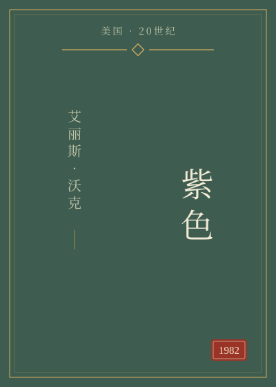
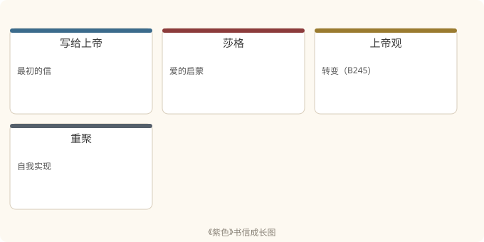

紫色
一、基本信息
| 作者 | 艾丽斯·沃克 |
|---|---|
| 成书/出版 | 1982年出版（Britannica：The Color Purple (1982)） Alice Walker — Encyclopaedia Britannica（百科全书） |
| 国别/地区 | 美国 |
| 时代 | 现当代 · 20世纪 |
| 体裁 | 长篇小说 |
| 语言 | 英语 |

《紫色》书信成长图（主题·结构图）
二、创作背景
Britannica：沃克为'first Black woman to win the Pulitzer Prize for fiction'（凭本作，1983年普利策奖+国家图书奖——B245）。
书信体：'An epistolary novel, it depicts the growing up and self-realization of an African American woman between 1909 and 1947' in rural Georgia（B245）。
争议（B245）：'some African American men strongly objected to the perceived negative portrayal of Black men'。
三、内容脉络
西丽（Celie）写给上帝与妹妹耐蒂的信——从受害到自我实现（Britannica 语境+通说）。
莎格对西丽的爱的启蒙；'survives rape and abuse at the hands of her father and husband'（B245）。
'Celie's changing views of God'——上帝观的转变（B245）。
四、主要人物表
| 人物 | 身份 | 说明 |
|---|---|---|
| 西丽（Celie） | 书信作者 | 成长的主人公（B245） |
| 莎格 | 歌女 | 爱的启蒙者（通说） |
| 耐蒂 | 妹妹 | 非洲来信（通说待核） |
五、主题与艺术特点
- 黑人女性的自我实现（B245：self-realization）。
- 黑人英语方言与书信体（B245：Black English Vernacular）。
- 上帝观的转变与'妇女主义'（B245；womanist——通说待核）。
六、影响与评论
- Britannica：首位黑人女性普利策小说奖；斯皮尔伯格1985年电影（B245）。
Alice Walker — Encyclopaedia Britannica（百科全书） - 黑人男性形象描写的争议与其回应——评论史的焦点（B245）。
Alice Walker — Encyclopaedia Britannica（百科全书）
七、阅读建议
难点
- 方言书信体。
- 争议阅读：女性主义与黑人社群内部的讨论（B245）。
- 《紫色》（译林出版社/北京十月文艺出版社版本，通说待核）。
对照《宠儿》：黑人女性叙事的两代。
八、待核实
- 西丽/耐蒂/莎格人名核对。
- 普利策与国家图书奖（1983）核对（B245 已载）。
- womanist 定义句（沃克答《纽约时报》——B245 已载）核对。
本页主要来源
艾丽斯·沃克的其他收录作品：紫色